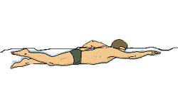
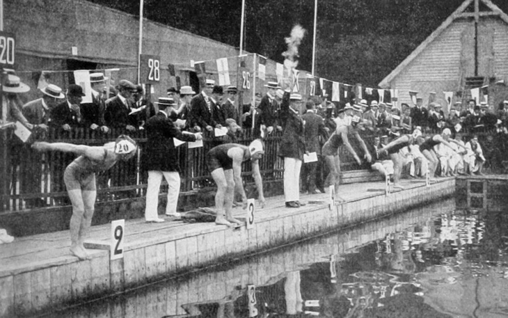
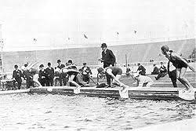

El origen de la natación es ancestral y se tiene prueba de ello a través del estudio de las más antiguas civilizaciones. El dominio de la natación, del agua, forma parte de la adaptación humana desde que los primeros homínidos se transformaron en bípedos y dominaran la superficie terrestre.
El origen de la natación lo encontramos ya en la Prehistoria. Lo prueban unas pinturas descubiertas de la Edad de Piedra (hace 7.500 años), que representan personas nadando. Del mismo modo, la primera referencia escrita data del año 2000 a.C. Ya en el antiguo Egipto, el “arte de nadar” estaba muy presente entre en la población. Debes saber que este es un país con costa marítima y está dividido en dos por el gran río Nilo. Además, disponía de una infinita red de canales. Por lo tanto no saber nadar era un riesgo para la vida. En el Japón antiguo, bajo el reinado del emperador Sugiu, ya en el año 38 a. C., cada año se celebraba ciertas competiciones deportivas, entre las cuales se encontraba recorrer ciertas distancias nadando. Siglos más tarde el emperador Go-Yozei impuso la natación en las escuelas japonesas en el siglo XVII.
Entre los antiguos griegos, nadar era algo tan difundido que incluso para decir que una persona era analfabeta, se decía que «no sabe ni leer ni nadar«. El filósofo griego Platón en el año 355 a. C., dice en uno de sus escritos: « ¿un cargo oficial debe recaer en una persona que sea culta, no como otros que no saben nadar ni leer?. Aunque en la antigua Grecia se le concedía gran importancia a la natación, curiosamente esta práctica nunca estuvo incluida en el programa de los Juegos Olímpicos de aquellas épocas.

Por ello, para encontrar los primeros orígenes de la natación, tanto deportivos y competitivos de relevancia, hemos de saltar a principios del siglo XIX, en Gran Bretaña como veremos más adelante. De hecho, sumergirse y nadar en el agua era algo asociado a remedios para las muchas enfermedades epidémicas. Hemos visto que la natación fue un deporte muy apreciado en las civilizaciones de Grecia y Roma, principalmente se empleaba como entrenamiento para los soldados o guerreros, también que en Japón ya se realizaban competiciones en el siglo I a.C., pero llegada la Edad Media en Europa su práctica cayó en el olvido.
Eso no significa que todos los entrenadores de elite australianos se plieguen a unos planes y métodos comunes, pero en esa olla de mezcla de influencias, caldeada permanentemente por una tradición apabullante, se cocinan campeones como Emma McKeon, Kaylee McKeown, Ariarne Titmus, Kyle Chalmers o Izaac Stubblety-Cook, que han aportado a su país un botín de oro en Tokio.

Se considera el inventor de la natación al británico John Trudgen (1852-1902), que fomentó el estilo que lleva su nombre, una especie de nado lateral que había aprendido de los indios del Amazonas. Con esta técnica se daba un paso adelante en la evolución de los estilos, demostrándose que era más efectivo que la antigua braza de pecho.
Como hemos explicado anteriormente, es obvio que el hombre aprendió a nadar desde los albores de su existencia. Era algo fundamental ya que de lo contrario, si se caía al agua era casi una muerte segura. Pero la natación, tal y como hoy la conocemos, es algo muy diferente a simplemente “saber nadar”. La natación tiene unas reglas, estilos y formas de nadar muy concretas. La historia de la natación tiene solo 200 años. El hombre siempre ha querido imitar a los peces en el agua.
La ciudad de Boston, Massachusetts, EE.UU. es pionera en la era moderna de este deporte, cuando el 23 de Julio de 1827 funda la primera escuela de esta disciplina acuática. Esta academia surge conjuntamente con la National Swimming Society, fundada en Londres en 1837, la primera organización rectora de este deporte en el mundo. Dos años después, en 1869 se creó la Metropolitan Swimming Clubs Association, que más tarde se convirtió en la Amateur Swimming Association (ASA).
Con estas organizaciones se fomenta y desarrolla la natación como un deporte acuático, es decir, la competencia entre participantes para ser el más rápido sobre una distancia establecida, exclusivamente mediante propulsión propia. La natación nace como deporte a principios del siglo XIX, en Gran Bretaña. La Sociedad Nacional de Natación de Londres (National Swimming Society of London), se fundó en el año 1837. Se organizaban multitud de competiciones de natación. En el año 1869, encontramos el primer campeón del mundo de natación, que es Tom Morris, ganado una carrera de una milla (1.600 metros) disputada en el río Támesis. Tuvo mucha aceptación y pronto este deporte se expandió por todo el mundo. En el último tercio del siglo XIX, la natación de competición en varios países europeos ya contaba con su propia federación. También, se establece con éxito en Nueva Zelanda y Australia. En el año 1870, en los Estados Unidos comenzaron a crearse clubes de aficionados a la natación que organizaban frecuentes competiciones. Pocos años después, en el 19 de julio del año 1908 se funda la FINA: Federación Internacional de Natación.
